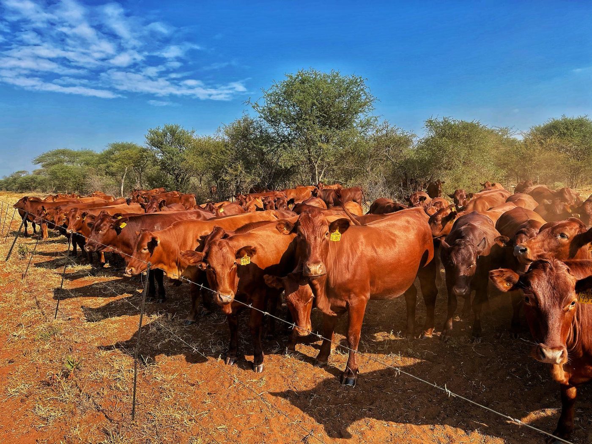

01
Nutrition
Good nutrition supports healthy growth and better animal condition.
The livestock section explains what the farm raises and the principles used to manage it.

We raise cattle, sheep, goats and poultry with attention to animal welfare, proper nutrition and responsible management.
The page gives visitors enough information to understand the livestock offering without overcrowding the design with technical detail.
Ask About Livestock →Good nutrition supports healthy growth and better animal condition.
Livestock management includes proper handling, shelter and monitoring.
Routine checks help keep production organised and responsive.

The farm story gives attention to the people doing the daily work. That makes the service feel practical and connected to the operation.
See the Farm →